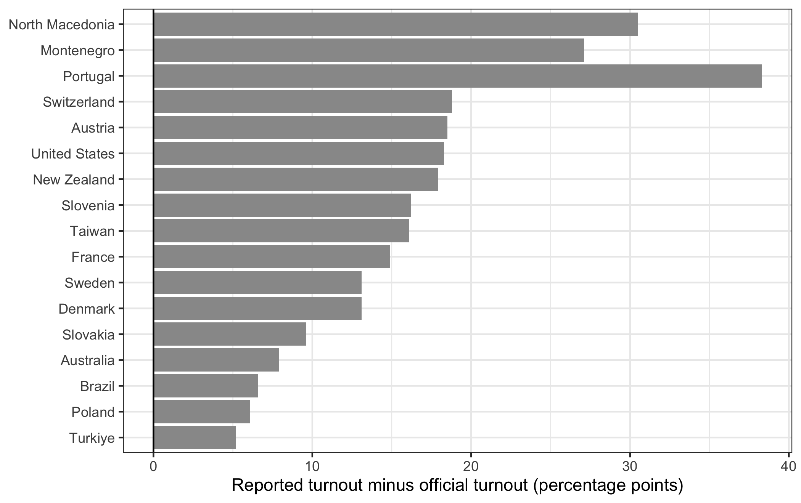
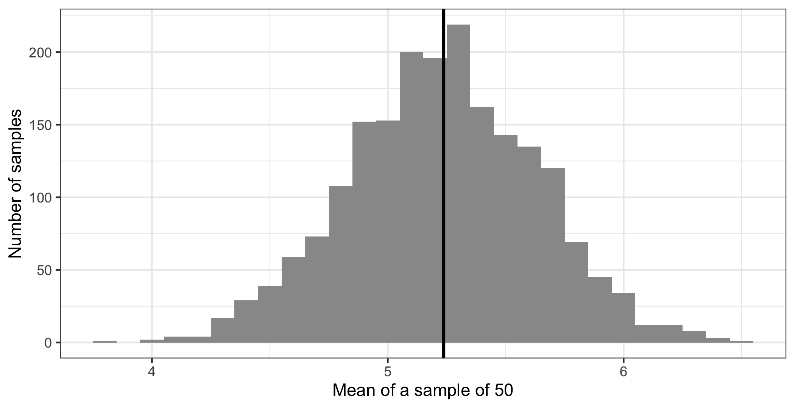

library(ggplot2)
library(dplyr)
swe <- readRDS("data/swe.rds")
turnout <- readr::read_csv("data/turnout.csv", show_col_types = FALSE)6 The logic of hypothesis testing
Everything up to now has described the data in front of us. From here on we want to say something about the world the data came from — and that is a different and much harder claim.
This chapter has no new method in it. It is the reasoning that every method in the rest of the course depends on, and it is worth slowing down for, because almost every mistake people make with statistics is a mistake about this rather than about arithmetic.
6.1 A sample is not a population
The population is the group you want to know about: everyone entitled to vote in Sweden in 2022. The sample is the 2845 people who actually answered.
You want to talk about the first and you only have the second. Everything in this chapter is about what that costs.
Start with something we can check, because we know the right answer. Our survey reports how many people voted. So does the electoral authority.
turnout |>
filter(study == "SWE_2022") |>
select(country, n, reported, official, gap)## # A tibble: 1 × 5
## country n reported official gap
## <chr> <dbl> <dbl> <dbl> <dbl>
## 1 Sweden 2687 97.3 84.2 13.197.3% against 84.2%. The survey is out by 13.1 percentage points.
Now the important part. That could be bad luck — this particular sample happening to catch more voters than average. If so, another study would miss in the other direction. CSES Module 6 contains 18 election studies in 17 countries, run by different organisations using different methods, so we can look.
turnout |>
mutate(country = reorder(country, gap)) |>
ggplot(aes(x = gap, y = country)) +
geom_col(fill = "grey60") +
geom_vline(xintercept = 0) +
labs(
x = "Reported turnout minus official turnout (percentage points)",
y = NULL
) +
theme_bw()
geom_col() draws bars whose length is a value in the data, as against geom_bar(), which counts rows. reorder() sorts one variable by another, so the countries come out in order of the size of the gap rather than alphabetically. geom_vline() draws a vertical line, with xintercept saying where on the horizontal axis it sits. y = NULL removes the axis title, because “country” over a list of country names is a label that carries nothing.
Every single one is positive.
turnout |>
summarise(
studies = n(),
over_reporting = sum(gap > 0),
smallest = min(gap),
largest = max(gap)
)## # A tibble: 1 × 4
## studies over_reporting smallest largest
## <int> <int> <dbl> <dbl>
## 1 18 18 5.2 30.5Eighteen studies, eighteen over-reports, from 5.2 to 30.5 percentage points. Nothing that goes the same way eighteen times out of eighteen is bad luck.
This is the distinction the whole chapter turns on.
Random error is the sample missing the population by chance. It is unavoidable, it goes both ways, it shrinks as the sample grows, and — this is the useful part — it can be measured. Most of this chapter is about measuring it.
Systematic error is the sample missing the population in a consistent direction. Here, people who do not vote are less likely to answer a survey about an election, and some of those who do answer say they voted when they did not. It does not go both ways, it does not shrink as the sample grows, and no statistical method in this course will detect it or fix it.
A bigger sample buys you less random error and nothing whatever against systematic error. A survey of ten million people, all of them recruited in the same biased way, is wrong by exactly as much as a survey of a thousand — it is just more confident about it.
6.1.1 What a random sample is
The methods in the rest of this course all assume a random sample: every member of the population has a known, non-zero chance of being selected.
The Swedish study comes close. Statistics Sweden drew names from the population register, which is about as good as sampling gets. What it could not control was who answered — and that is where the turnout gap comes from. A perfect sampling frame does not save you if response is selective.
A question. The survey also reports 14.4% voting for the Sweden Democrats, where the official result recorded by the Swedish electoral authority was 20.5%.
Is that the same problem as the turnout gap, or a different one? Which of the two would a larger sample help with?
When your cases are countries rather than people, you never have a random sample — there is only one world and you have all of it, or the part of it that publishes data. Social scientists routinely run these methods on country data anyway and treat the result as if the assumption held. You should know that this is what is happening.
6.2 Measuring variation
To measure random error we first need to measure spread. How far apart are the values in a variable?
The natural starting point is how far each case sits from the mean.
lr <- swe$lr_self[!is.na(swe$lr_self)]
deviations <- lr - mean(lr)
round(sum(deviations), 10)## [1] 0Zero. Not approximately — exactly, up to rounding. That is what a mean is: the point where the distances above and below balance. So the sum of deviations is useless as a measure of spread; it is zero for every variable that ever existed.
The fix is to square the deviations first, which makes them all positive, then average them. That average is the variance.
squared <- deviations^2
sum(squared) / (length(lr) - 1)## [1] 7.798143var(lr)## [1] 7.798143Squaring solved one problem and created another: the variance is in squared units. For a 0-to-10 scale it is in “scale points squared”, which means nothing. Take the square root and you are back on the original scale. That is the standard deviation.
sd(lr)## [1] 2.792515Roughly, the standard deviation is the typical distance of a case from the mean. Here it is about 2.8 points on a scale running from 0 to 10.
In formulas, with \(\bar{x}\) for the mean and \(n\) for the number of cases:
\[s^2 = \frac{\sum(x_i - \bar{x})^2}{n - 1} \qquad s = \sqrt{s^2}\]
6.2.1 Why \(n - 1\)
Notice that we divided by length(lr) - 1 rather than by length(lr), and that var() agreed.
The reason is that we are not describing these 2448 people. We are using them to estimate the spread in the population. And a sample is systematically less spread out than the population it came from, because the rare extreme cases are, by definition, rarely sampled.
So the obvious calculation would be biased downwards, every time. Dividing by \(n-1\) instead of \(n\) makes the result slightly larger and corrects it. With thousands of cases the difference is invisible; with twelve it matters.
6.3 What happens when you sample repeatedly
Here is the central idea, and R lets us watch it happen rather than take it on trust.
Suppose our 2448 respondents were the whole population, and their mean left-right position, 5.24, were the true value. Now draw a small sample of 50 from them and take its mean.
set.seed(2026)
mean(sample(lr, size = 50))## [1] 5.3sample() draws at random from a vector; size says how many. set.seed() fixes the random number generator so that you get the same “random” draw as this page did — without it your number will differ, which is the point.
That sample missed. Draw another and it will miss differently. The question is: by how much, typically?
We can just do it. replicate() runs an expression many times and collects the results.
sample_means <- replicate(2000, mean(sample(lr, size = 50)))
length(sample_means)## [1] 2000Two thousand samples, two thousand means. What do they look like?
ggplot(data.frame(sample_means), aes(x = sample_means)) +
geom_histogram(binwidth = 0.1, fill = "grey60") +
geom_vline(xintercept = mean(lr), linewidth = 1) +
labs(
x = "Mean of a sample of 50",
y = "Number of samples"
) +
theme_bw()
Three things to notice, and all of them matter.
It is centred on the truth. The vertical line — drawn by geom_vline() again, with linewidth making it thicker than the default — is the population mean. The samples scatter around it rather than drifting off somewhere else.
mean(sample_means)## [1] 5.22905mean(lr)## [1] 5.23652It is bell-shaped, even though the variable itself is not — lr_self is a lumpy 0-to-10 scale with a spike at 5. The distribution of sample means comes out smooth and symmetric anyway. This happens almost regardless of the shape of the original variable, which is the single most useful fact in statistics.
Its spread is measurable. That is the number we actually want:
sd(sample_means)## [1] 0.4000784That is how far a sample of 50 typically misses by. It has a name: the standard error.
6.3.1 The point of all that
We simulated it because we could — we had all 2448 cases and could pretend they were a population. In real research you have one sample and no way to draw another.
The remarkable thing is that you do not need to. The standard error can be calculated from a single sample:
\[SE = \frac{s}{\sqrt{n}}\]
The standard deviation, divided by the square root of the sample size. Compare it with what the simulation produced:
sd(lr) / sqrt(50)## [1] 0.3949213sd(sample_means)## [1] 0.40007840.395 against 0.400. The formula tells you, from one sample, what two thousand samples would have shown you.
Two consequences follow from the \(\sqrt{n}\) on the bottom.
More data means less random error — the standard error shrinks as the sample grows.
But slowly. To halve the standard error you need four times the data. This is why the difference between a sample of 1,000 and a sample of 2,000 is much smaller than people expect, and why the useful question about a survey is almost never “is it big enough”.
A question. Our full sample has 2448 valid answers on lr_self, not 50.
Work out the standard error of the mean for the full sample. Then ask what would have to be true for that number to be a good description of how far our estimate is from the truth about Sweden — and whether the turnout table at the top of this chapter gives you any confidence that it is.
6.4 The 95% rule
Because sampling distributions come out bell-shaped, one fact about the normal distribution does most of the practical work.
In a normal distribution, about 95% of the values lie within about two standard deviations of the mean. More precisely, 1.96.
pnorm(1.96)## [1] 0.9750021pnorm(1.96, lower.tail = FALSE)## [1] 0.0249979pnorm() gives the proportion of a normal distribution below a given number of standard deviations from the mean. Below 1.96 lies 97.5% of it; lower.tail = FALSE asks for the other end instead, giving the 2.5% above. Two tails of 2.5% each leaves 95% in the middle.
Applied to a sampling distribution, that says: about 95% of samples produce an estimate within 1.96 standard errors of the truth.
6.5 Confidence intervals
Turn that round and you have the most useful thing in this chapter.
estimate <- mean(lr)
se <- sd(lr) / sqrt(length(lr))
lower <- estimate - 1.96 * se
upper <- estimate + 1.96 * se
round(c(estimate, lower, upper), 3)## [1] 5.237 5.126 5.347The mean is 5.24, with a 95% confidence interval from 5.13 to 5.35.
Read it as: a range of values for the population figure that this sample is consistent with. Values inside the interval are ones the data cannot rule out. Values outside it are ones the data argues against.
What a confidence interval does not mean. It is tempting to say “there is a 95% probability that the true value is in this interval”. That is the standard misstatement, and it is worth knowing why.
The population value is a fixed number. It is either inside this interval or it is not; there is no probability about it. The 95% describes the procedure, not this particular interval: if you drew sample after sample and built an interval each time, about 95% of those intervals would contain the true value. You never learn whether yours is one of them.
In practice people read a confidence interval as a range of plausible values, and that is a reasonable working habit. But when you write it up, write it as a range, not as a probability.
And note what it is silent about. The interval says nothing about the 13.1-point turnout gap. It measures random error only. A narrow confidence interval on a biased estimate is a precise wrong answer.
6.6 Hypothesis tests
The last piece. Most research questions are not “what is the value” but “is there anything there at all” — does this differ between groups, is this related to that.
Such questions get turned into a pair of hypotheses:
- The null hypothesis: there is nothing there. No difference, no association. Usually written as zero.
- The alternative hypothesis: there is something there.
The test is always the same shape:
\[\text{test statistic} = \frac{\text{what we found}}{\text{how much it could vary by chance}} = \frac{\text{signal}}{\text{noise}}\]
A large ratio means the finding is big relative to the uncertainty around it. A small one means it is the sort of thing sampling noise produces routinely.
That ratio gets converted into a p-value: the probability of seeing a result at least this large if the null hypothesis were true — if there were really nothing there.
A small p-value means the data would be surprising in a world with no effect, so the no-effect story is a poor explanation. The conventional threshold is 0.05.
Read that definition again, because the direction catches people out. The p-value is the probability of the data given no effect. It is not the probability that there is no effect, and it is not the probability that you are wrong. It cannot be, because it assumes the null hypothesis to compute the number, and you cannot use an assumption as evidence about itself.
Confidence intervals and p-values are two views of the same thing. If the 95% confidence interval excludes zero, the p-value is below 0.05, and the other way round. Our interval for the mean runs from 5.13 to 5.35 and does not come near zero — although here that comparison is meaningless, because there was never any reason to think the average Swede sits at 0 on a left-right scale.
That last point is worth keeping. A test is only interesting if the null hypothesis was worth entertaining. Much published research reports p-values for comparisons nobody doubted.
The next three sessions are all applications of this one idea. Session 7 tests whether two categorical variables are related, session 8 whether two means differ, session 9 whether two continuous variables move together. In each case the shape is what you have just seen: something we found, divided by how much it could have varied by chance.
How to write it up.
Swedish respondents place themselves close to the centre of the left-right scale (mean = 5.24, 95% CI [5.13, 5.35], n = 2448).
Report the estimate, the interval, and the number of cases the estimate rests on. Mistakes to avoid:
- Reporting a p-value without the estimate. “The difference was significant (p < .05)” does not say how big it was, which is what the reader needs.
- Reporting more decimal places than the data supports. A left-right scale with eleven whole-number points does not measure anything to three decimals.
- Calling a result “significant” in prose without the word “statistically”. In ordinary English significant means important, and a statistically significant finding can be far too small to matter.
- Treating p just above 0.05 as no effect and just below as an effect. 0.049 and 0.051 are the same evidence. The threshold is a convention, not a discovery.
- Forgetting the n, especially after missing values have quietly removed part of the sample.
In the seminar. swirl lesson 06 Hypothesis Testing. Variation, drawing repeated samples and watching the sampling distribution appear, the standard error, and confidence intervals. Around 30 minutes.